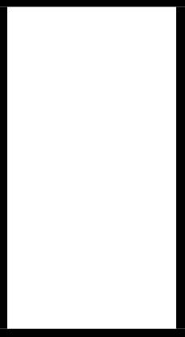
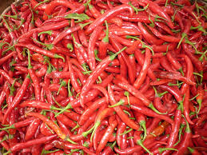

Crop Information

Chilli Crop
Profit - 77%
Time to Harvest - 3 to 4 Months
Fertilizers - 50kg P, 20kg N,
and 18kg K/hectre
Crop Rotation in Chilli Farming-
Chilli should be followed by crops
like Jowar, Bajra, Wheat
Cotton should be followed by
Tomatoes, Potatoes as increases
disease problems.